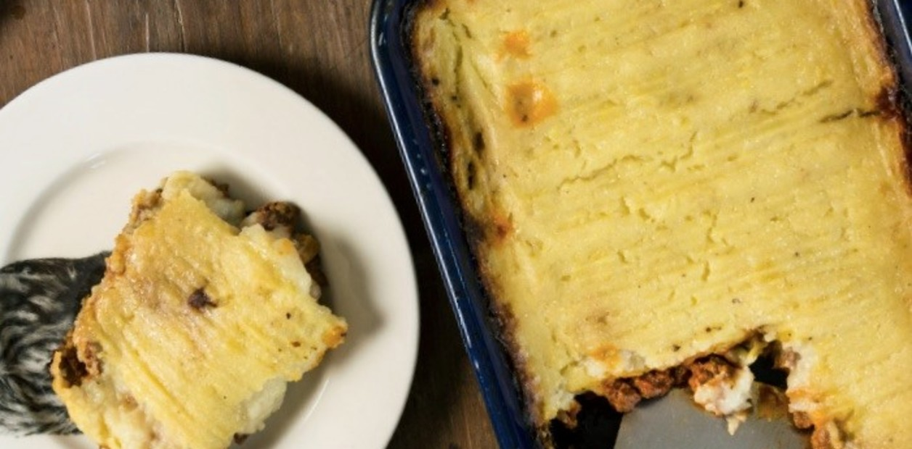

"Este plato se conoce en Argentina como pastel de papas pero en otros países se lo llama pastel de carne. Se trata de capas de puré de papas y carne picada condimentada. Se le suele agregar queso para gratinarlo en el horno. Es una receta fácil y económica."

Ingredientes:
1 k de papas.
4 huevos.
1/4 taza de leche.
400g de cebolla.
750 g de carne picada.
1 cucharada de manteca.
50g morrón.
1 cda de azúcar.
50g aceitunas verdes sin carozo.
Sal y pimienta a gusto.
Preparación del pastel de papas:
Pelar la papa y ponerla a hervir hasta conseguir el punto deseado. Una vez lista echarle sal a gusto y preparar el puré que será la base y la capa de este pastel.
A continuación colocar aceite de girasol en una olla a fuego moderado, picar la cebolla y la zanahoria y rehogarla en el aceite caliente. Añadir el ajo y el morrón. Y una vez que las verduras se cocinen agregar la carne picada y luego revolver para lograr una mejor cocción. Una vez cocinada la carne agregar la lata de tomates... Sal a gusto y orégano para condimentar. Y seguir revolviendo con una cuchara para que los ingredientes se incorporen mejor. Luego de constatar que la carne esta cocinada y que se incorporaron los tomates a la salsa (20 minutos) aprox. Retirar del fuego y dejar reposar.
Aparte hervir los dos huevos durante 10 min. Aprox. Una vez cocinados pelarlos y picarlos.
En una fuente, colocar una primera capa de puré de papas que preparamos anteriormente. Luego colocaremos una segunda capa con la salsa de carne picada y tomates. Encima de eso, colocaremos el huevo picado y después haremos una tercera capa de puré de papas. Para finalizar, pondremos un poco del resto de salsa que nos quedo encima del pastel y finalmente colocaremos una capa de queso cremoso.
Encender el horno a temperatura máxima y llevaremos el pastel para lograr que el queso se derrita. Controlaremos los minutos hasta que esté en su punto deseado. Una vez terminado retirar del horno y servir.